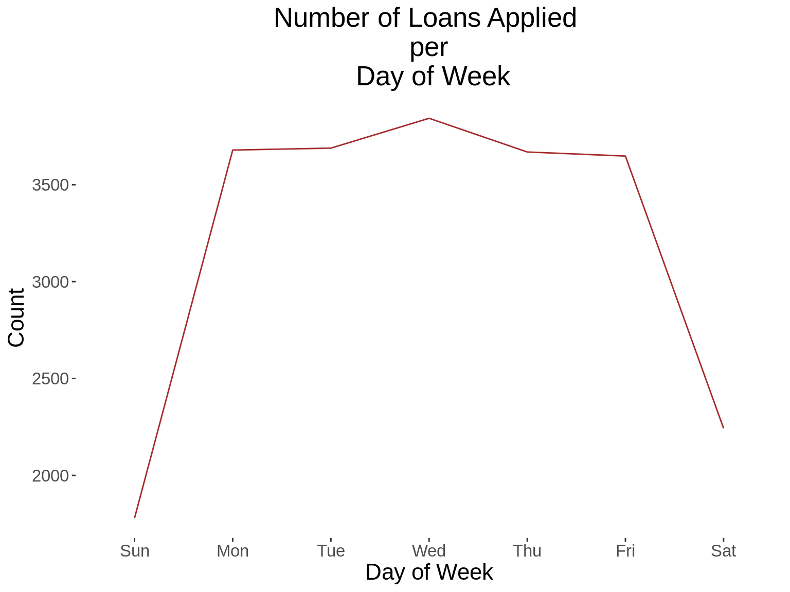

Data Fest Kampala (R Training)

Introduction
Zindi is the first data science competition platform in Africa. Zindi hosts an entire data science ecosystem of scientists, engineers, academics, companies, NGOs, governments and institutions focused on solving Africa’s most pressing problems. The data used herein comes from the Data Science Nigeria Loan Prediction challenge,hosted on Zindi, whose details can be found here.
Disclaimer: This script does not involve any machine learning. The data has been used to train some tidyverse packages.
0. Load the libraries (packages) required
## Create a vector of the required libraries
### dplyr: Manipulating datasets
### lubridate: Dealing with dates
### tidyr: Reshaping data
### ggplot: Plotting beautiful plots
pkgs <- c("dplyr","lubridate","tidyr","ggplot2","stringr","kableExtra",
"DT","ggthemes")
## Check if there are variables you want to load, that are not already installed.
miss_pkgs <- pkgs[!pkgs %in% installed.packages()[,1]]
## Installing the missing packages
if(length(miss_pkgs)>0){
install.packages(miss_pkgs)
}
## Loading all the packages
invisible(lapply(pkgs,library,character.only=TRUE))
## Remove the objects that are no longer required
rm(miss_pkgs)
rm(pkgs)1. Setting the plot theme
kampala_theme<- theme(legend.position = "right",
legend.direction = "vertical",
legend.title = element_blank(),
legend.text = element_text(size =rel(1.4),angle = 0),
plot.title = element_text( size = rel(1.8), hjust = 0.5),
plot.subtitle = element_text(size = rel(1.4), hjust = 0.5),
#axis.text = element_text( size = rel(1.5)),
axis.text.x = element_text(size =rel(1.4),angle = 0),
axis.text.y = element_text(size =rel(1.4),angle = 0),
axis.title = element_text( size = rel(1.5)),
panel.background = element_rect(fill = NA))2. Read in the datasets
## Create an object containing the path, where the data is saved
### Please change the path to suit the location of your datasets
data_path <- "DSN Zindi LoanDataset"
df <- read.csv(paste(data_path, "traindemographics.csv",sep="/"))
## List the files that are in that directory
dsn_challenge_files <-list.files(data_path, pattern = ".csv")
dsn_challenge_files
#> [1] "SampleSubmission.csv" "testdemographics.csv" "testperf.csv"
#> [4] "testprevloans.csv" "traindemographics.csv" "trainperf.csv"
#> [7] "trainprevloans.csv"
## Generate an empty list that will hold the datasets
dsn_challenge <- list()
## Read in the datasets
for(i in 1: length(dsn_challenge_files)){
## Read in each dataset, one by one
dsn_challenge[[i]]<-read.csv(paste(data_path, dsn_challenge_files[i],sep = "/"))
## Remove the ".csv" from the name
dsn_challenge_files[i] <- gsub(".csv","",dsn_challenge_files[i])
## Assign each dataset a name, as is in the directory
assign(dsn_challenge_files[i], dsn_challenge[[i]])
}
## Remove the objects that we do not need
rm(i)
rm(dsn_challenge)
rm(dsn_challenge_files)
rm(testdemographics)
rm(testperf)
rm(testprevloans)
rm(SampleSubmission)3. Handling duplicates
## Check whether the traindemographic dataset has unique customer ids
length(unique(traindemographics$customerid))
#> [1] 4334
## Inspect the duplicate records
which(duplicated(traindemographics$customerid))
#> [1] 160 518 777 1016 1091 1189 1481 1929 1997 4127 4267 4287
## View(traindemographics$customerid[which(duplicated(traindemographics$customerid))])
## Drop the duplicates, and only keep unique records
traindemographics <- traindemographics %>%
unique()4. Generating more demographic variables
## set.seed ensures that the sampling code is reproducible
set.seed(7032018)
## Generate gender
gender<- sample(c("Male","Female"), nrow(traindemographics), replace = T)
traindemographics$gender <- gender
## Generate State
state <- sample(c("Oyo","Bauchi","Enugu","Lagos","Ogun","Kadun"), nrow(traindemographics),replace = T)
traindemographics$state<-state
## Age
### Convert to character
traindemographics$birthdate<-as.character(traindemographics$birthdate)
### Split the string variable o remove unnecessary information
traindemographics$birthdate<-substr(traindemographics$birthdate,1,10)
### Convert the data to date format
traindemographics$birthdate <- ymd(traindemographics$birthdate)
### Generate age
traindemographics$age<-as.numeric(ceiling(difftime(ymd(20180101),traindemographics$birthdate,"days")/365))
## Remove unnecessary objects
rm(gender)
rm(i)
rm(state)5. Generating new variables, based on conditions of another variable
## Age Categories
traindemographics <- traindemographics %>%
mutate(age_category = ifelse(age>=21 & age<=30,"21-30",
ifelse(age>=31 & age<=40,"31-40",
ifelse(age>=41 & age<=60,"41-60",""))))
table(traindemographics$age_category)
#>
#> 21-30 31-40 41-60
#> 1352 2368 6146. Generating summary statistics for one categorical variables
## Age
### Generate a summary statistics table
summ_table <- traindemographics %>%
group_by(age_category) %>%
summarise(count = n()) %>%
mutate(perc = round((count/sum(count))*100,0))
### Print the summary statistics table
kable_styling(kable(summ_table,col.names = c("Age Categories","Frequency","Percentage")))| Age Categories | Frequency | Percentage |
|---|---|---|
| 21-30 | 1352 | 31 |
| 31-40 | 2368 | 55 |
| 41-60 | 614 | 14 |
### Generate a graph based on the summary table shown above
summ_graph <- ggplot(summ_table, aes(x=age_category,y=perc))+
geom_bar(stat = "identity", fill="brown")+
geom_text(aes(label =perc),vjust = -0.25, size = 4)+
kampala_theme+
labs(title = "Distribution of Age",x="Age Categories",
y="Percentage")
summ_graph7. Generating summary statistics for several categorical variables
## Generate a function that produces a table, and a graph
summ_function <- function(xvar, xlab,title){
### Generate a summary statistics table
summ_table <- traindemographics %>%
group_by_(xvar) %>%
summarise(count = n()) %>%
mutate(perc = round((count/sum(count))*100,0))
### Print the summary statistics table
kable_styling(kable(summ_table,col.names = c(xlab,"Frequency","Percentage")))
### Generate a graph based on the summary table shown above
summ_graph <- ggplot(summ_table, aes_string(x=xvar,y="perc"))+
geom_bar(stat = "identity", fill="brown")+
geom_text(aes(label =perc),vjust = -0.25, size = 4)+
kampala_theme+
labs(title = paste("Distribution of",title),x=xlab,
y="Percentage")
print(summ_graph)
}
## Generate a vector containing tha variables whose summary statistics you want to obtain.
vars<- c("bank_account_type","gender","age_category","state")
xlabs<-c("Bank Account Type","Gender","Age Categories","States")
for(i in 1: length(vars)){
summ_function(vars[i],xlabs[i],xlabs[i])
}
##Remove unnecessary objects
rm(summ_graph)
rm(summ_table)
rm(xlabs)
rm(vars)8. Append the trainprevloans dataset with the trainperf loans dataset
## We want to keep the column names that are in both datasets
vars <- names(trainprevloans)[which(names(trainprevloans) %in% names(trainperf))]
vars[1] “customerid” “systemloanid” “loannumber” “approveddate” “creationdate” [6] “loanamount” “totaldue” “termdays” “referredby”
## Subset the two datasets, to only contain the selected variables
trainprevloans <- trainprevloans %>%
select(vars)
trainperf <- trainperf %>%
select(vars)
## Append the two datasets
trainloans <- bind_rows(trainprevloans, trainperf)
## Remove the datasets that we no longer need
rm(trainprevloans)
rm(trainperf)9. Merge with the traindemographics dataset
demo_loans_data <- right_join(traindemographics, trainloans, by="customerid")
## Remove unwanted objects
rm(traindemographics)
rm(trainloans)10. Determine the number of loans applied each year, each month, each day of the month, and each hour
## We assume that the creation date represents the date when the loan was applied.
## Convert the creation date to date time format
demo_loans_data$creationdate<-substr(as.character(demo_loans_data$creationdate),1,19)
demo_loans_data$creationdate<-ymd_hms(demo_loans_data$creationdate)
## Generate time variables from the creation date
demo_loans_data <- demo_loans_data %>%
mutate(App_Year = factor(year(creationdate)),
App_Month = month(creationdate,label = T,abbr = T),
App_Day = day(creationdate),
App_DoW = wday(creationdate,label = T, abbr = T),
App_Hour = hour(creationdate))11. Generate a time series graph that shows the number of loans applied.
time_function <- function(xvar, xlab,title){
summ_table <- demo_loans_data %>%
distinct(customerid, loannumber,.keep_all = T) %>%
group_by_(xvar) %>%
summarise(count = n())
kable_styling(kable(summ_table,col.names = c(xlab,"Count")))
summ_graph <- ggplot(summ_table, aes_string(x=xvar, y="count", group=1, color=1))+
geom_line(stat = "identity",color = "brown") +
kampala_theme+
labs(title = paste("Number of Loans Applied \n per \n",title),x=xlab,
y="Count")
print(summ_graph)
}
xvars<-c("App_Year","App_Day","App_DoW","App_Hour")
xlabs<-c("Year","Day of Month","Day of Week","Hour")
xtitles<-xlabs
for(i in 1: length(xvars)){
time_function(xvars[i],xlabs[i], xtitles[i])
}
12. Generate a time series graph that shows the number of loans applied, per loan term.
## Add the word "days" to the termdays variable
demo_loans_data$termdays<- paste(demo_loans_data$termdays,"days")
## Convert loanterm days to a factor variable
demo_loans_data$termdays<- factor(demo_loans_data$termdays)
time_function <- function(xvar,gvar,xlab, gvarlab, title){
summ_table <- demo_loans_data %>%
distinct(customerid, loannumber,.keep_all = T) %>%
group_by_(xvar,gvar) %>%
summarise(count = n())
kable_styling(kable(summ_table,col.names = c(xlab,gvarlab,"Count")))
summ_graph <- ggplot(summ_table, aes_string(x=xvar, y="count", group=gvar, color=gvar))+
geom_line(stat = "identity") +
kampala_theme+
scale_color_brewer(palette = "Spectral")+
labs(title = paste("Number of Loans Applied \n per \n",title),x=xlab,
y="Count")
print(summ_graph)
}
xvars<-c("App_Year","App_Day","App_DoW","App_Hour")
gvars<-c("termdays")
xlabs<-c("Year","Day of Month","Day of Week","Hour")
gvarlabs<-c("Loan Term")
xtitles<-xlabs
for(i in 1: length(xvars)){
for(j in 1: length(gvars)){
time_function(xvars[i],gvars[j],xlabs[i],gvarlabs[j],xtitles[i])
}
}